Homework 4: Neural Radiance Fields
Grace Xu
Part 1
Model Architecture
- Number of layers: 4
- Positional encoding levels L: 10
- Width: 256
- Learning rate: 1e-2
- Batch size: 10,000 pixels
- Training iterations: 1000
Training Progression (Img 1)
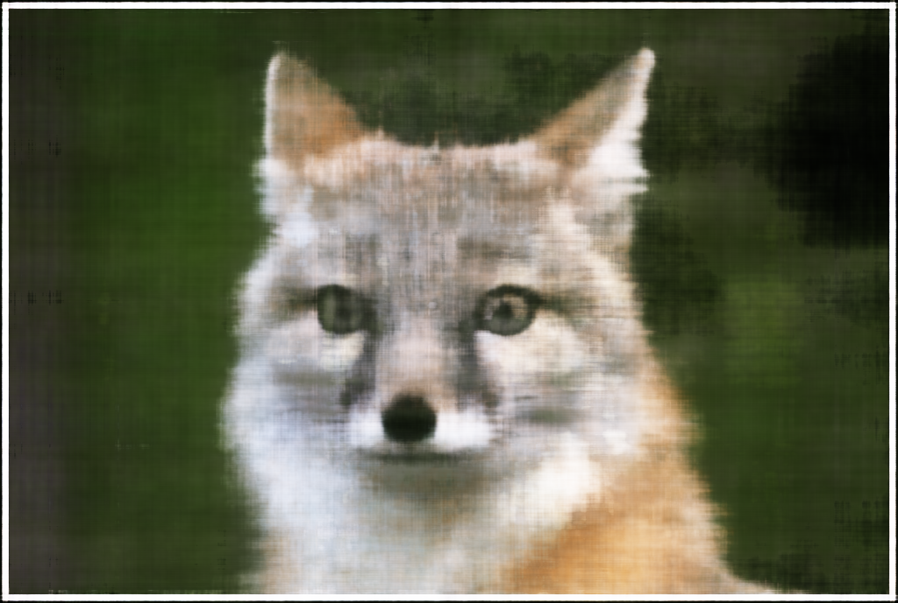
~25% of training
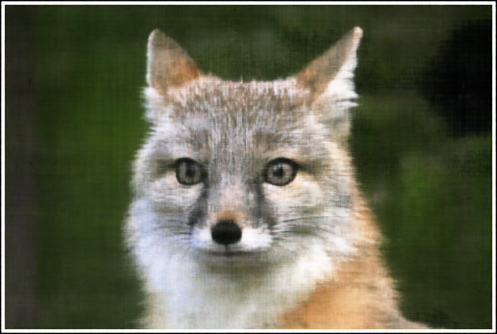
Final reconstruction
Training Progression (Img 2)
Same schedule as img1.
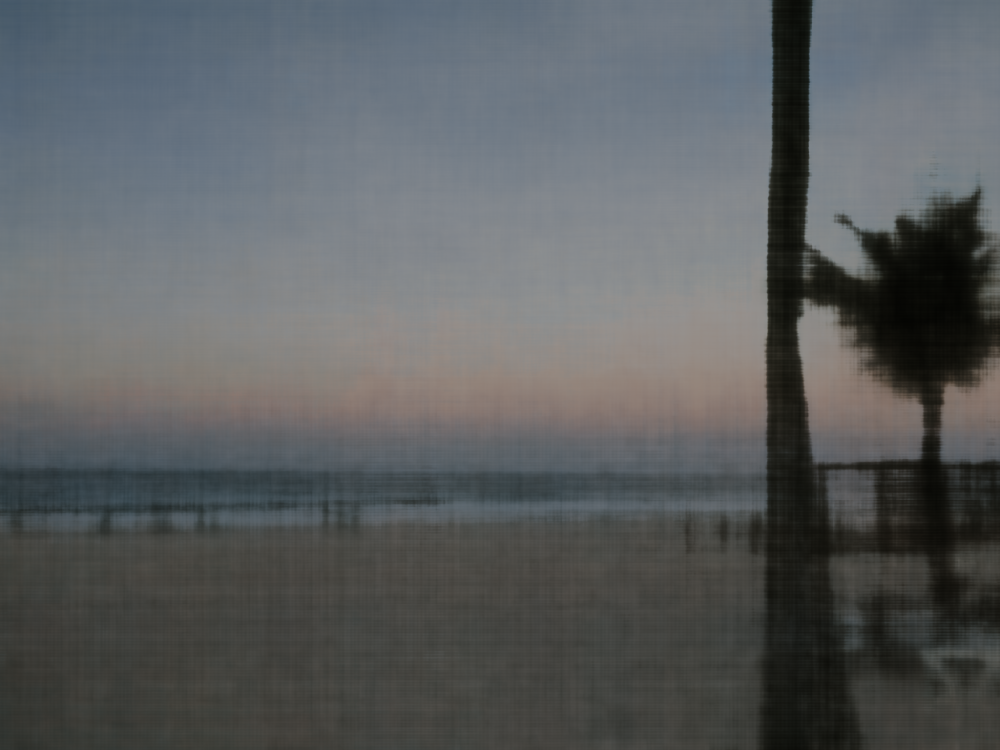
~25% of training
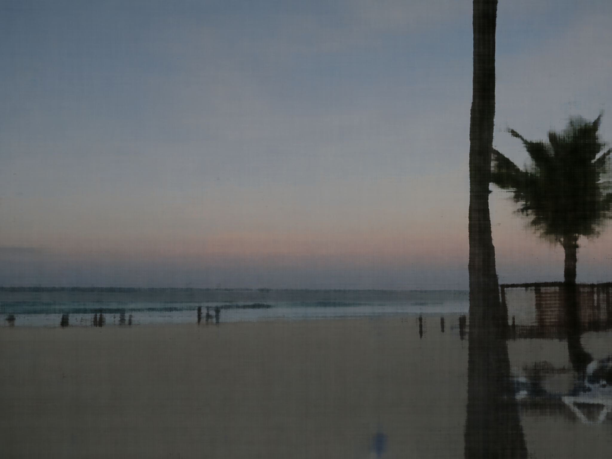
Final reconstruction
Different L and Width Values
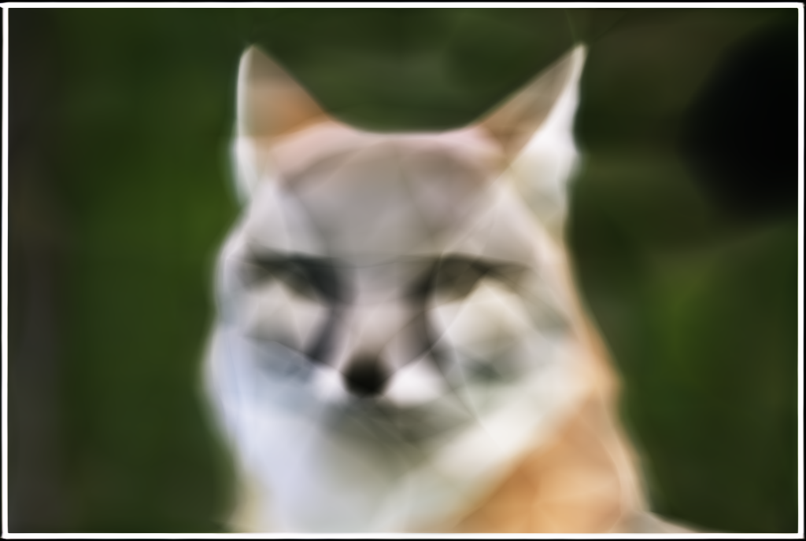
L = 2, width = 128
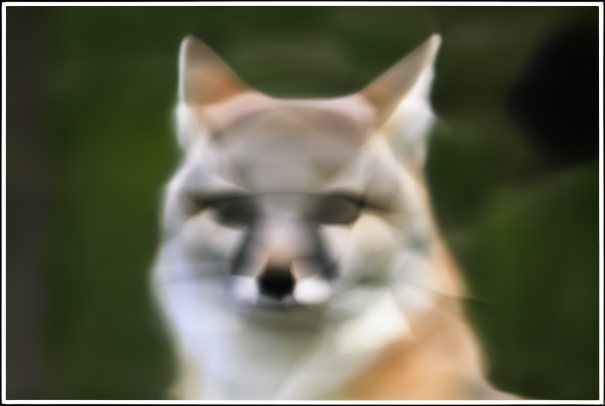
L = 2, width = 256
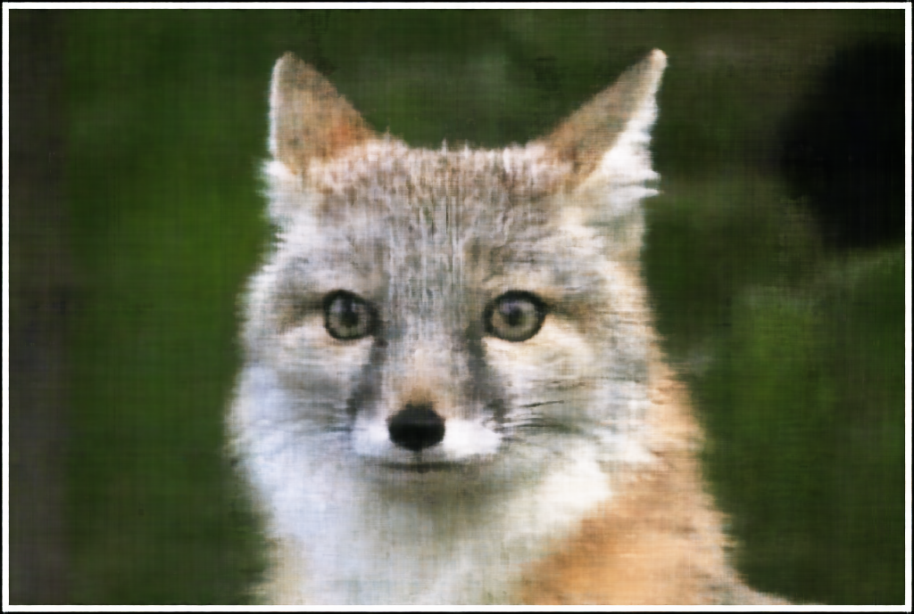
L = 10, width = 128
PSNR Curve
Part 2
Implementation Overview
- 2.1: Create Rays from Cameras (already implemented)
- 2.2: Sampling - For each sampled ray, uniformly sample 3D points between the near and far bounds. During training I enable perturbation so the sample locations are randomly jittered within each interval, which helps reduce overfitting to a fixed set of sample depths.
- 2.3: Dataloader - The dataloader samples rays from the training images.
- 2.4: Neural Radiance Field - Modified Part 1 MLP to take in different inputs (3D world coordinates and viewing directions) and output RGB color and density and increased depth based on hw instructions.
- 2.5: Volume Rendering (already implemented)
Ray & Sampling Visualization
Training Progress
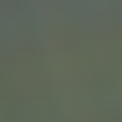
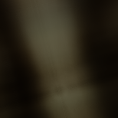
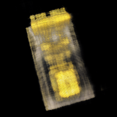
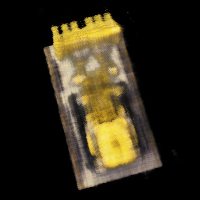
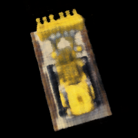
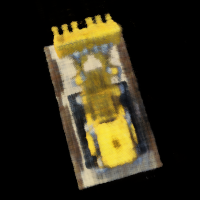
PSNR Curve
Final Rendering (Spherical Trajectory)